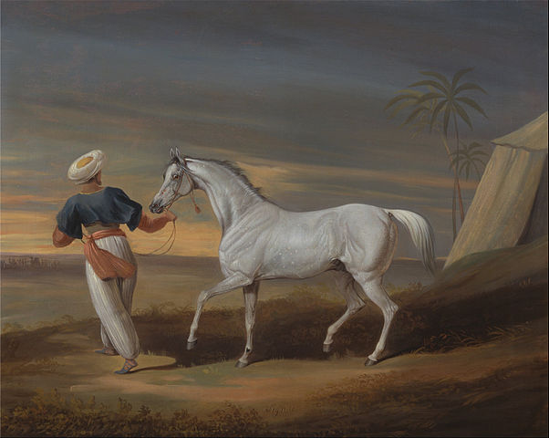
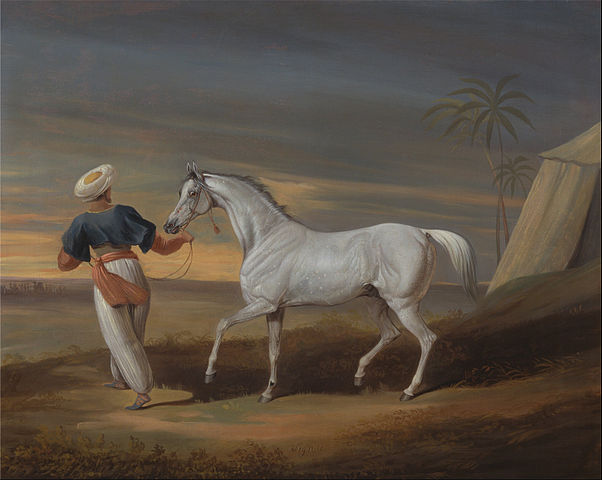

"I have always been passionate about animals,and my love for pets runs deep.
The unconditional companionship and joy they bring into our lives are truly unparalleled.
From the playful antics of dogs to the gentle purring of cats,
each pet possesses a unique charm that fosters a profound connection.
Beyond the sheer delight they provide, pets offer unwavering loyalty,
teaching us valuable lessons in responsibility and empathy.
Whether it's the comforting presence of a furry friend on a lonely day
or the infectious excitement of their wagging tails,
the bond between humans and pets is a source of constant comfort and happiness.
Embracing the responsibilities of pet ownership,
I've come to appreciate the profound impact these creatures can have on our well-being,
enriching our lives with love, laughter, and a genuine sense of fulfillment."
 

To dive more into Pet Bliss Videos! 🐾Click here for an instant dose of joy, featuring mischievous antics and heartwarming moments that celebrate the enchanting world of our furry friends."